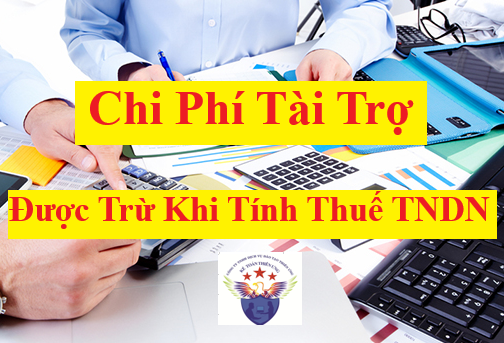

Quy định về các khoản chi phí tài trợ như Chi tài trợ cho giáo dục, Chi tài trợ cho y tế, Chi tài trợ cho việc khắc phục hậu quả thiên tai, Chi tài trợ làm nhà cho người nghèo, Chi tài trợ nghiên cứu khoa học
Chi phí tài trợ có được trừ khi tính thuế TNDN không?
Theo quy định tại điểm đ khoản 2 Điều 9 của Nghị định 320/2025/NĐ-CP hướng dẫn Luật thuế TNDN thì:
Điều 9. Các khoản chi được trừ khi xác định thu nhập chịu thuế
2. Doanh nghiệp được tính vào chi phí được trừ khi xác định thu nhập chịu thuế đối với khoản chi thực tế phát sinh khác đáp ứng đủ điều kiện tại điểm b và điểm c khoản 1 Điều này, bao gồm:
đ) Khoản tài trợ cho giáo dục, y tế, văn hóa, phòng, chống, khắc phục hậu quả thiên tai, dịch bệnh, làm nhà đại đoàn kết, nhà tình nghĩa, nhà cho các đối tượng chính sách theo quy định của pháp luật; khoản tài trợ theo quy định của Chính phủ, Thủ tướng Chính phủ dành cho các địa phương thuộc địa bàn có điều kiện kinh tế - xã hội đặc biệt khó khăn; khoản tài trợ cho nghiên cứu khoa học, phát triển công nghệ và đổi mới sáng tạo, chuyển đổi số.
đ1) Khoản tài trợ cho giáo dục bằng tiền hoặc hiện vật quy định tại điểm này gồm: Tài trợ cho các trường học công lập, dân lập và tư thục thuộc hệ thống giáo dục quốc dân theo quy định của pháp luật về giáo dục mà khoản tài trợ này không phải là để góp vốn, mua cổ phần trong các cơ sở này; tài trợ cơ sở vật chất phục vụ giảng dạy, học tập và hoạt động của trường học; tài trợ cho các hoạt động thường xuyên của trường; tài trợ học bổng cho học sinh, sinh viên thuộc các cơ sở giáo dục phổ thông, cơ sở giáo dục nghề nghiệp và cơ sở giáo dục đại học được quy định tại Luật Giáo dục (tài trợ trực tiếp cho học sinh, sinh viên hoặc thông qua các cơ sở giáo dục, thông qua các cơ quan, tổ chức có chức năng huy động tài trợ theo quy định của pháp luật); tài trợ cho các cuộc thi về các môn học được giảng dạy trong trường học mà đối tượng tham gia dự thi là người học; tài trợ để thành lập các Quỹ khuyến học giáo dục theo quy định của pháp luật về giáo dục đào tạo;
đ2) Khoản tài trợ cho y tế bằng tiền hoặc hiện vật quy định tại điểm này gồm: Tài trợ cho các cơ sở y tế được thành lập theo quy định pháp luật về y tế mà khoản tài trợ này không phải là để góp vốn, mua cổ phần trong các cơ sở y tế đó; tài trợ thiết bị y tế, dụng cụ y tế, thuốc chữa bệnh; tài trợ cho các hoạt động thường xuyên của tổ chức được cấp phép hoạt động khám, chữa bệnh theo pháp luật; tài trợ cho người bệnh thông qua một cơ quan, tổ chức có chức năng huy động tài trợ theo quy định của pháp luật;
đ3) Khoản tài trợ cho văn hóa bằng tiền hoặc hiện vật quy định tại tiết này gồm: Tài trợ cho bảo tàng, thư viện, được thành lập theo quy định pháp luật về văn hóa mà khoản tài trợ này không phải là để góp vốn, mua cổ phần trong các bảo tàng, thư viện đó; tài trợ trực tiếp cho các hoạt động thường xuyên của Quỹ bảo tồn di sản văn hóa; tài trợ cho bảo tàng, thư viện, Quỹ bảo tồn di sản văn hóa thông qua một cơ quan, tổ chức có chức năng huy động tài trợ theo quy định của pháp luật;
đ4) Khoản tài trợ cho phòng, chống, khắc phục hậu quả thiên tai, dịch bệnh bằng tiền hoặc hiện vật quy định tại điểm này gồm: Tài trợ để phòng, chống, khắc phục hậu quả thiên tai, dịch bệnh trực tiếp cho tổ chức được thành lập và hoạt động theo quy định của pháp luật; tài trợ cho cá nhân bị thiệt hại thông qua một cơ quan, tổ chức có chức năng huy động tài trợ theo quy định của pháp luật;
đ5) Khoản tài trợ làm nhà đại đoàn kết, nhà tình nghĩa, nhà bằng tiền hoặc hiện vật cho các đối tượng chính sách quy định tại điểm này bao gồm: Tài trợ trực tiếp hoặc tài trợ thông qua một cơ quan, tổ chức có chức năng huy động tài trợ theo quy định của pháp luật.
Đối tượng chính sách quy định tại khoản này bao gồm: Người có công theo quy định của pháp luật về người có công; đối tượng bảo trợ xã hội hưởng trợ cấp từ ngân sách nhà nước; người thuộc hộ nghèo, cận nghèo và các trường hợp khác theo quy định của pháp luật;
đ6) Khoản tài trợ bằng tiền hoặc hiện vật theo quy định của Chính phủ hoặc quyết định của Thủ tướng Chính phủ dành cho các địa phương thuộc địa bàn có điều kiện kinh tế - xã hội đặc biệt khó khăn là chương trình được Chính phủ, Thủ tướng Chính phủ quy định thực hiện ở các địa phương thuộc địa bàn có điều kiện kinh tế - xã hội đặc biệt khó khăn (bao gồm cả khoản tài trợ của doanh nghiệp cho việc xây dựng công trình hạ tầng ở địa bàn kinh tế - xã hội đặc biệt khó khăn theo Đề án được cấp có thẩm quyền phê duyệt).
đ7) Khoản tài trợ bằng tiền hoặc hiện vật cho nghiên cứu khoa học, phát triển công nghệ và đổi mới sáng tạo, chuyển đổi số cho các tổ chức, cá nhân. Đối tượng nhận tài trợ quy định tại điểm này thực hiện theo quy định của pháp luật về khoa học, công nghệ và đổi mới sáng tạo, pháp luật về chuyển đổi số;
=======================
+ Chi tài trợ, chi ủng hộ địa phương, chi ủng hộ các đoàn thể, tổ chức xã hội, chi từ thiện là chi phí không được trừ khi tính thuế TNDN
=======================
Lưu ý:
+ Phần thuế giá trị gia tăng phải nộp phát sinh của hàng hóa, dịch vụ sử dụng để tài trợ theo quy định tại điểm đ khoản 2 Điều 9 của Nghị định 320/2025/NĐ-CP này được tính vào chi phí được trừ khi tính thuế TNDN
+ Phần thuế giá trị gia tăng phải nộp phát sinh của hàng hóa, dịch vụ sử dụng để tài trợ theo quy định tại điểm đ khoản 2 Điều 9 của Nghị định 320/2025/NĐ-CP này được tính vào chi phí được trừ khi tính thuế TNDN
(Theo khoản 12 điều 10 của Nghị định 320/2025/NĐ-CP)
+ Chi tài trợ, chi ủng hộ địa phương, chi ủng hộ các đoàn thể, tổ chức xã hội, chi từ thiện là chi phí không được trừ khi tính thuế TNDN
(Theo khoản 17 điều 10 của Nghị định 320/2025/NĐ-CP)
==============================
Công ty đào tạo Kế Toán Diệu Tâm mời các bạn tham khảo thêm bài viết:
=====================
Hồ sơ chi phí tài trợ để tính vào chi phí được trừ khi tính thuế TNDN
Theo quy định tại khoản 5 điều 3 của Thông tư 20/2026/TT-BTC quy định chi tiết một số điều Luật Thuế thu nhập doanh nghiệp và Nghị định số 320/2025/NĐ-CP (có hiệu lực từ ngày 12/03/2026) thì:
5. Hồ sơ của khoản tài trợ cho giáo dục, y tế, văn hóa; khoản tài trợ cho phòng, chống, khắc phục hậu quả thiên tai, dịch bệnh, làm nhà đại đoàn kết, nhà tình nghĩa, nhà cho các đối tượng chính sách theo quy định của pháp luật; khoản tài trợ theo quy định của Chính phủ, Thủ tướng Chính phủ dành cho các địa phương thuộc địa bàn có điều kiện kinh tế - xã hội đặc biệt khó khăn; khoản tài trợ cho nghiên cứu khoa học, phát triển công nghệ và đổi mới sáng tạo, chuyển đổi số quy định tại điểm b5 khoản 1 Điều 9 của Luật Thuế thu nhập doanh nghiệp.
a) Đối với khoản tài trợ cho giáo dục, y tế, văn hóa bằng tiền hoặc hiện vật, hồ sơ gồm: Biên bản xác nhận khoản tài trợ có chữ ký của người đại diện doanh nghiệp là nhà tài trợ và đại diện bên nhận tài trợ (hoặc đại diện cơ quan, tổ chức có chức năng huy động tài trợ theo quy định của pháp luật), trong đó đối với khoản tài trợ cho người bệnh thì trong biên bản xác nhận khoản tài trợ phải có xác nhận của cơ quan, tổ chức có chức năng huy động tài trợ theo quy định của pháp luật và chữ ký xác nhận của người bệnh hoặc thân nhân của người bệnh;
b) Đối với khoản tài trợ cho việc phòng, chống, khắc phục hậu quả thiên tai, dịch bệnh bằng tiền hoặc hiện vật, hồ sơ gồm: Biên bản xác nhận khoản tài trợ có chữ ký của người đại diện doanh nghiệp là nhà tài trợ và đại diện bên nhận tài trợ là cá nhân, tổ chức được thành lập và hoạt động theo quy định của pháp luật, trong đó đối với khoản tài trợ cho cá nhân thì trong biên bản xác nhận tài trợ cần có xác nhận của cơ quan, tổ chức có chức năng huy động tài trợ theo quy định của pháp luật và chữ ký xác nhận của cá nhân được tài trợ;
c) Đối với khoản tài trợ làm nhà đại đoàn kết, nhà tình nghĩa, nhà cho các đối tượng chính sách bằng tiền hoặc hiện vật, hồ sơ gồm: Biên bản xác nhận khoản tài trợ có chữ ký của người đại diện doanh nghiệp là nhà tài trợ và đại diện bên nhận tài trợ (hoặc đại diện cơ quan, tổ chức có chức năng huy động tài trợ theo quy định của pháp luật); văn bản xác nhận người thụ hưởng là đối tượng chính sách do cơ quan có thẩm quyền theo quy định của pháp luật chuyên ngành cấp;
d) Đối với khoản tài trợ bằng tiền hoặc hiện vật theo quy định của Chính phủ, Thủ tướng Chính phủ dành cho các địa phương thuộc địa bàn có điều kiện kinh tế - xã hội đặc biệt khó khăn, hồ sơ gồm: Biên bản xác nhận khoản tài trợ có chữ ký của người đại diện doanh nghiệp là nhà tài trợ và đại diện bên nhận tài trợ (hoặc đại diện cơ quan, tổ chức có chức năng huy động tài trợ theo quy định của pháp luật);
đ) Đối với khoản tài trợ bằng tiền hoặc hiện vật cho nghiên cứu khoa học, phát triển công nghệ và đổi mới sáng tạo, chuyển đổi số, hồ sơ thực hiện theo quy định của pháp luật về khoa học, công nghệ và đổi mới sáng tạo, pháp luật về chuyển đổi số và Nghị định số 320/2025/NĐ-CP;
e) Biên bản xác nhận khoản tài trợ nêu tại khoản này theo Mẫu số 01/TNDN ban hành kèm theo Thông tư này.
Các bạn có thể xem và tải mẫu Mẫu số 01/TNDN ban hành kèm theo Thông tư 20/2026/TT-BTC về tại đây:
==============================Các bạn có thể xem và tải mẫu Mẫu số 01/TNDN ban hành kèm theo Thông tư 20/2026/TT-BTC về tại đây:
========================================
Nếu doanh nghiệp của bạn mà nhận được khoản tài trợ thì thực hiện theo quy định tại khoản 8, điều 4 của Nghị định 320/2025/NĐ-CP như sau:
Điều 4. Thu nhập được miễn thuế
Thu nhập được miễn thuế thực hiện theo quy định tại Điều 4 Luật Thuế thu nhập doanh nghiệp, bao gồm:
8. Khoản tài trợ nhận được để sử dụng cho hoạt động giáo dục, văn hóa, nghệ thuật, từ thiện, nhân đạo và hoạt động xã hội khác tại Việt Nam; khoản tài trợ nhận được từ doanh nghiệp không có mối quan hệ liên kết, tổ chức, cá nhân trong nước và ngoài nước để sử dụng cho hoạt động nghiên cứu khoa học, phát triển công nghệ và đổi mới sáng tạo, chuyển đổi số; khoản hỗ trợ trực tiếp từ ngân sách nhà nước và từ Quỹ Hỗ trợ đầu tư do Chính phủ thành lập; khoản bồi thường của Nhà nước theo quy định của pháp luật.
a) Tổ chức nhận tài trợ quy định tại khoản này là tổ chức được thành lập và hoạt động theo quy định của pháp luật.
Doanh nghiệp có mối quan hệ liên kết quy định tại khoản này thực hiện theo quy định của pháp luật về quản lý thuế;
b) Khoản tài trợ cho hoạt động nghiên cứu khoa học, phát triển công nghệ và đổi mới sáng tạo, chuyển đổi số thực hiện theo pháp luật về khoa học, công nghệ và đổi mới sáng tạo, pháp luật về công nghiệp công nghệ số và pháp luật về chuyển đổi số;
c) Khoản hỗ trợ trực tiếp từ ngân sách nhà nước là khoản hỗ trợ từ ngân sách nhà nước các cấp theo quy định của pháp luật về ngân sách nhà nước;
d) Khoản bồi thường của Nhà nước quy định tại khoản này được xác định theo pháp luật về trách nhiệm bồi thường của Nhà nước và khoản bồi thường của Nhà nước theo quy định của pháp luật khác;
đ) Quỹ Hỗ trợ đầu tư quy định tại khoản này là Quỹ được thành lập, quản lý và sử dụng theo quy định tại Nghị định số 182/2024/NĐ-CP ngày 31 tháng 12 năm 2024 của Chính phủ về thành lập, quản lý và sử dụng Quỹ Hỗ trợ đầu tư;
e) Trường hợp khoản tài trợ, hỗ trợ nhận được tại khoản này mà doanh nghiệp sử dụng không đúng mục đích thì bị truy thu thuế và xử phạt vi phạm theo quy định của pháp luật.
